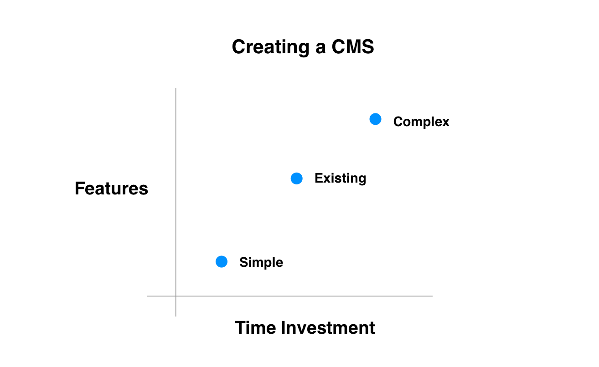

Create your own CMS
There is a classic trope: If you create your own content management system (CMS), you'll spend all your time adding features to it.
I'm not sure this is a problem with creating your own CMS so much as feature management. If your goal is to write, then you have 3 options:
- Mysterious - Use an existing CMS, and pray its many featureful behaviors don't derail you.
- Wasteful - Create your own featureful CMS.
- Constrained - Create a CMS with very few features.
The downside of a constrained CMS is that you won't be able to write absolutely everything you could dream of. That sounds like the kind of problem you should start thinking about after you've been writing for a while, not before.

increase the size of your ask
When someone asks how they can help telling them to wait is a bad idea. You might want to write something up, or get things ready. But if you're like me it won't happen.
Maybe someone who wants to help can help with these bigger asks: the write-ups and the getting readies.
learning cantonese in chinese bakeries
I feel like the cure for flashcard dread, when studying cantonese, is going to a Chinese bakery.
daily notes are garbage. beautiful garbage.
At different points in my life, I've tried keeping notes in different ways. The most common focus has been this: remembering what I'm reading today a month from now.
Nowadays I take the opposite approach. I want to remember the things from today for today. But the bulk of that will be garbage. So I take quick daily notes. Once I get to a certain level of understanding, I write newer more permenant notes (ad infinitum).